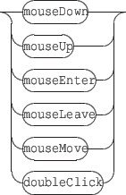

Next:
15.2 Notification messages
Up:
15. Events and Interaction
Previous:
15. Events and Interaction
Contents
Index
15.1 Interaction messages
Events currently
watchable
are:

Example:
/ITL/scene/myObject watch mouseDown "/ITL/scene/myObject" "show" 0;
Request the object
myObject
to watch
mouseDown
events and send a message to itself.
/ITL/scene/myObject watch mouseDown "host.domain.org:12100/an/address" "start";
Request the object
myObject
to watch
mouseDown
events and send a "start" message to host.domain.org on udp port 12100 to OSC address /an/address
Grame
-
Interlude project
[ANR-08-CORD-010]